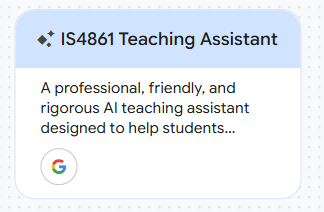
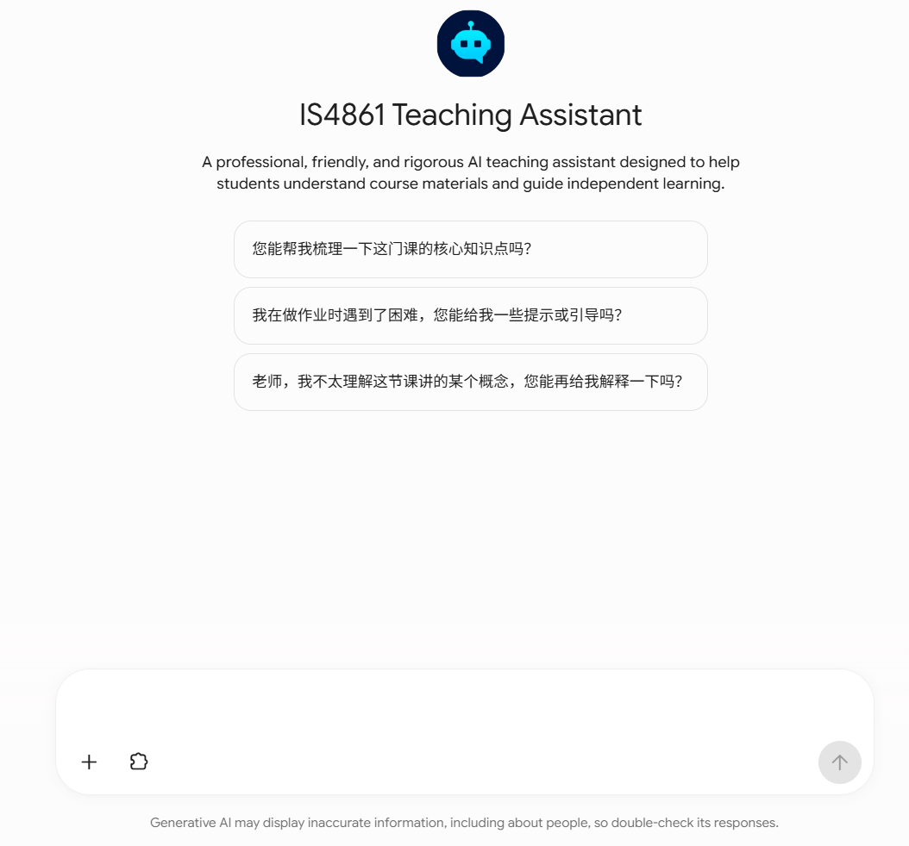

Gemini Enterprise · 資訊系統學系兩門課程
我使用 Gemini Enterprise，為資訊系統學系的兩門課程設計並開發了一個 AI 代理，服務約 300 名用戶，並獲得高度評價。這份工作的價值在於工具已經用在真實課程裡：用戶用得上，而且有用戶手冊、知識庫，以及按回饋做出的後續改進。


回饋與改進： 收集用戶回饋，分析表現數據，並反覆改進邏輯與準確度。回饋和表現數據被用來調整代理如何推理，以及回答是否準確，因此這個服務約 300 名用戶的工具可以按實際使用繼續改進。